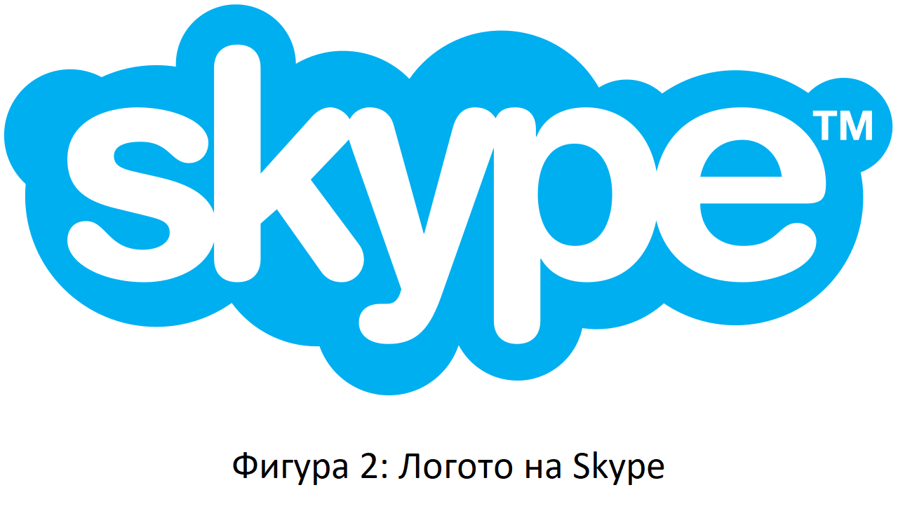

7. Алтернативи на WebRTC

Една от най-известните платформи от началото на века е Skype.
Skype е приложение, предназначено за провеждане на аудио и видео разговори, както и за обмен на текстови съобщения или файлове през Интернет. Първата версия на това приложение е пусната през 2003 г. и първоначално е адаптирана само за гласова комуникация. Като една от първите платформи, които прилагат технологията VoIP (Voice over Internet Protocol), тя придобива невероятна популярност. Според съобщението на Microsoft, направено на конференцията Build 2016, Skype все още има над 300 милиона активни потребители месечно. Като се има предвид, че Skype може да се използва на настолен компютър, мобилен телефон или през уеб браузър, няма нищо изненадващо, че това е очевидният избор в случай, че искате да се обадите на Вашия клиент или колега от другия край на земята. [4] [13]
WebRTC, от друга страна, не е готово за използване приложение, а технология. Тя позволява осъществяване на комуникация в реално време чрез уеб браузър. Потребителят няма нужда да инсталира допълнителен софтуер или приставка за браузър на трета страна, за да получи възможност за обмен на текстови съобщения, файлове или за да извършва на аудио/видео разговори. Всеки разработчик ще бъде доволен от факта, че WebRTC API позволява внедряване на необходимата функционалност с минимално количество код. Тези характеристики са причината за нарастването на популярността на WebRTC. Тази технология е пусната от Google през май 2011 г. и пет години по-късно, през юни 2016 г., Google предоставя следните статистически данни:
- Два милиарда браузъра Chrome с поддръжка на WebRTC
- Един милиард WebRTC аудио и видео минути на седмица в Chrome
- 1200 WebRTC-базирани компании и проекта
- Пет милиарда изтегляния на мобилни приложения, които включват WebRTC
Според мнението на анализаторите глобалният пазар на WebRTC ще продължава да расте. Един от основните двигатели на пазара за комуникация в реално време в мрежата е голямото търсене на услуги за аудио/видео чат, достъпни без изтегляне на допълнителни плъгини. Нарастващият брой устройства, поддържащи WebRTC, доведе до тенденцията Bring Your Own Device (BYOD, донеси своето устройство). Това е нова тенденция на работните места, която насърчава служителите да използват собствените си мобилни устройства за нуждите на бизнес комуникацията. [4]
Както можете да видите, тук говорим за подобни концепции. Тези две платформи предоставят почти еднакви услуги. Начините за предоставяне на тези услуги обаче се различават. Skype е приложение за уеб комуникация, докато WebRTC е инструмент, който позволява внедряване на функционалността, необходима за уеб комуникация. Може да изглежда, че предпочитането на WebRTC пред Skype не е много мъдър избор, тъй като предполага полагане на допълнителни усилия. Вместо да използвате Skype, с който сте запознати, ще трябва да отделите известно време за проучване и да изберете решението, което отговаря по-добре на Вашите нужди сред наличните опции. Като алтернатива можете да създадете свое собствено WebRTC приложение, като използвате ресурсите на Вашата компания или да наемете компания за разработка на софтуер. [4]
10. Демонстрация на имплементация на WebRTC в браузъра
Тук ще покажа примерна демонстрация на това как можем да използваме WebRTC в браузъра, като ще направим сайт, който ни прави снимки и да ни ги показва. [7]
HTML интерфейс
Нашият HTML интерфейс има две основни оперативни секции: панел за поток и заснемане и панел за презентация. Всеки от тях е представен рамо до рамо в собствен <div>, за да се улесни стилизирането.
Първият панел вляво съдържа два компонента: елемент <video>, който ще получава потока от WebRTC, и <button>, който потребителят щраква, за да заснеме видео кадър.
<div class="camera">
<video id="video">Видео стриймът не е наличен.</video>
<button id="startbutton">Направи снимка</button>
</div>
Фигура 6: Код за бутона и алтернативния текст [7]
Това е лесно и ще видим как ще се свърже, когато влезем в кода на JavaScript.
След това имаме елемент <canvas>, в който се съхраняват заснетите кадри, потенциално манипулирани по някакъв начин и след това конвертирани в изходен файл с изображение. Това платно се запазва скрито чрез стилизиране на платното с display:none, за да се избегне претрупването на екрана — потребителят не трябва да вижда този междинен етап.
Имаме и елемент <img>, в който ще нарисуваме изображението — това е крайният дисплей, който се показва на потребителя.
<canvas id="canvas">
<div class="output">
<img id="photo" alt="Видеопотокът ще се покаже в този прозорец.">
</div>
</canvas>
Фигура 7: Код за прозореца с видеопоток [7]
Това е целият релевантен HTML. Останалото е само част от оформлението на страницата и малко текст, предлагащ връзка към тази страница. [7]
JavaScript кодът
Сега нека да разгледаме JavaScript кода. Нека го разделим на няколко части, за да е по-лесен за обяснение.
Инициализация
Започваме, като обвиваме целия скрипт в анонимна функция, за да избегнем глобални променливи, след което настройваме различните променливи, които ще използваме. [7]
(function() {
var width = 320; // Правим снимката да е толкова широка
var height = 0; // Височината ще се сметне на база на ширината
var streaming = false;
var video = null;
var canvas = null;
var photo = null;
var startbutton = null;
Фигура 8: Функция за инициализация [7]
Функцията startup()
Функцията startup() се изпълнява, когато страницата приключи зареждането, със съдействието на EventTarget.addEventListener. Работата на тази функция е да поиска достъп до уеб камерата на потребителя, да инициализира изхода <img> в състояние по подразбиране и да установи слушателите на събития, необходими за получаване на всеки кадър на видео от камерата и реагиране при щракване върху бутона за заснемане на изображение. [7]
Получаване на препратки към елементи
Първо, грабваме препратки към основните елементи, до които трябва да имаме достъп.
function startup() {
video = document.getElementById('video');
canvas = document.getElementById('canvas');
photo = document.getElementById('photo');
startbutton = document.getElementById('startbutton');
Фигура 9: Функция за получаване на препратки към елементи [7]
Взимане на медийния поток
Следващата задача е да получим медиен поток:
navigator.mediaDevices.getUserMedia({ video: true, audio: false })
.then(function(stream) {
video.srcObject = stream;
video.play();
})
.catch(function(err) {
console.log("An error occurred: " + err);
});
Фигура 10: Функция за взимане на медийния поток [7]
Тук извикваме MediaDevices.getUserMedia() и изискваме видео поток (без аудио). Връща обещание, към което прикачваме обратни извиквания за успех и неуспех.
Успешното обратно извикване получава обект на поток като вход. Това е източникът на елемента <video> към нашия нов поток.
След като потокът е свързан с елемента <video>, ние започваме да го възпроизвеждаме, като извикаме HTMLMediaElement.play().
Обратното извикване за грешка се извиква, ако отварянето на потока не работи. Това ще се случи например, ако няма свързана съвместима камера или потребителят е отказал достъп. [7]
Слушане за наличието на видеопотока
След извикване на HTMLMediaElement.play() на <video>, има (надявам се кратък) период от време, който изтича, преди видеопотокът от видео да започне да тече. За да избегнем блокиране, докато това не се случи, добавяме слушател на събитие към видеото за събитието canplay, което спира, когато възпроизвеждането на видеото действително започне. В този момент всички свойства на видеообекта са конфигурирани въз основа на формата на потока.
video.addEventListener('canplay', function(ev){
if (!streaming) {
height = video.videoHeight / (video.videoWidth/width);
video.setAttribute('width', width);
video.setAttribute('height', height);
canvas.setAttribute('width', width);
canvas.setAttribute('height', height);
streaming = true;
}
}, false);
Фигура 11: Функция за слушане за наличието на видеопотока [7]
Това обратно извикване не прави нищо, освен ако не е извикано за първи път; това се тества чрез разглеждане на стойността на нашата променлива за стрийминг, която е фалшива при първото изпълнение на този метод.
Ако това наистина е първото изпълнение, ние задаваме височината на видеоклипа въз основа на разликата в размера между действителния размер на видеото, video.videoWidth, и ширината, на която ще го изобразим, ширината.
И накрая, ширината и височината както на видеото, така и на платното, се настройват да съвпадат една с друга чрез извикване на Element.setAttribute() на всяко от двете свойства на всеки елемент и задаваме ширини и височини според случая. И накрая, ние задаваме променливата за стрийминг на true, за да се предпазим от неволно стартиране на този код за настройка отново. [7]
Обработване щракванията върху бутона
За да заснемем неподвижна снимка всеки път, когато потребителят щракне върху бутона за стартиране, трябва да добавим слушател на събитие към бутона, който да бъде извикан, когато бъде издадено събитието за щракване:
startbutton.addEventListener('click', function(ev){
takepicture();
ev.preventDefault();
}, false);
Фигура 12: Функция за обработване на щракванията върху бутона [7]
Този метод е достатъчно прост: той просто извиква нашата функция takepicture(), дефинирана по-долу в раздела Заснемане на кадър от потока, след което извиква Event.preventDefault() на полученото събитие, за да предотврати кликването да бъде обработвано повече от веднъж. [7]
Завършване на метода startup()
Има само още два реда код в метода startup():
clearphoto();
}
Фигура 13: Функция за инициализиране на метода clearphoto() [7]
Това е мястото, където инициализираме метода clearphoto(), който ще опишем по-долу в раздела Изчистване на полето за снимки. [7]
Изчистване на кутията за снимки
Изчистването на полето за снимки включва създаване на изображение, след което го преобразуваме във формат, използваем от елемента <img>, който показва най-скоро заснетата рамка. Този код изглежда така:
function clearphoto() {
var context = canvas.getContext('2d');
context.fillStyle = "#AAA";
context.fillRect(0, 0, canvas.width, canvas.height);
var data = canvas.toDataURL('image/png');
photo.setAttribute('src', data);
}
Фигура 14: Функция за изчистване на кутията за снимки [7]
Започваме, като получаваме препратка към скрития елемент <canvas>, който използваме за изобразяване извън екрана. След това задаваме fillStyle на #AAA (доста светло сиво) и запълваме цялото платно с този цвят, като извикаме fillRect().
Накрая в тази функция преобразуваме платното в PNG изображение и извикваме photo.setAttribute(), за да накараме нашата заснета неподвижна кутия да покаже изображението. [7]
Заснемане на кадър от потока
Има една последна функция за дефиниране и тя е целта на цялото упражнение: функцията takepicture(), чиято задача е да улови текущо показания видео кадър, да го преобразува в PNG файл и да го изведе в полето за заснета рамка. Кодът изглежда така:
function takepicture() {
var context = canvas.getContext('2d');
if (width && height) {
canvas.width = width;
canvas.height = height;
context.drawImage(video, 0, 0, width, height);
var data = canvas.toDataURL('image/png');
photo.setAttribute('src', data);
} else {
clearphoto();
}
}
Фигура 15: Функция за заснемане на кадър от потока [7]
Както всеки път, когато трябва да работим със съдържанието на платно, започваме с получаване на контекста на 2D drawing context платно.
След това, ако и ширината, и височината са различни от нула (което означава, че има поне потенциално валидни данни за изображението), ние задаваме ширината и височината на платното да съвпадат с тази на заснетия кадър, след което извикваме drawImage(), за да нарисуваме текущия кадър на видеото в контекста, запълвайки цялото платно с изображението на рамката.
След като платното съдържа заснетото изображение, ние го преобразуваме във формат PNG, като извикаме HTMLCanvasElement.toDataURL() върху него; накрая, ние извикваме photo.setAttribute(), за да накараме нашата заснета неподвижна кутия да покаже изображението.
Ако няма налично валидно изображение (тоест и ширината, и височината са 0), изчистваме съдържанието на заснетата рамка, като извикаме clearphoto(). [7]
Демо:
Ако не работи правилно, моля обновете страницата и дайте достъп до камерата Ви. Всичко се обработва локално.
11. Списък с цитирана литература
[1] BlogGeek.Me, What is WebRTC and What is it Good For?, публикуван на 1 август 2021 г.
https://bloggeek.me/what-is-webrtc/, последно посетен на 12 април 2022 г.
[2] Google Developers, WebRTC.org website
https://webrtc.org/, последно посетен на 12 април 2022 г.
[3] Mary E. Shacklett, WebRTC (Web Real-Time Communications)
https://www.techtarget.com/searchunifiedcommunications/definition/WebRTC-Web-Real-Time-Communications, последно посетен на 13 април 2022 г.
[4] XB Software, Why a Private WebRTC Video Chat App is Better for Business Than Skype, публикуван на 17 юли 2018 г.
https://xbsoftware.medium.com/why-a-private-webrtc-video-chat-app-is-better-for-business-than-skype-f1a6b2cc6e84, последно посетен на 13 април 2022 г.
[5] BigBlueButton, BigBlueButton overview
https://docs.bigbluebutton.org/, последно посетен на 13 април 2022 г.
[6] BigBlueButton, BigBlueButton architecture
https://docs.bigbluebutton.org/2.2/architecture.html, последно посетен на 13 април 2022 г.
[7] MDN contributors, Taking still photos with WebRTC, последно променено на 14 март 2022 г.
https://developer.mozilla.org/en-US/docs/Web/API/WebRTC_API/Taking_still_photos, последно посетен на 14 април 2022 г.
[8] Wikipedia, WebRTC logo
https://upload.wikimedia.org/wikipedia/commons/thumb/6/68/WebRTC_Logo.svg/2560px-WebRTC_Logo.svg.png, последно посетен на 13 април 2022 г.
[9] BlogGeek.Me, What is WebRTC and What is it Good For?, публикуван на 1 август 2021 г.
https://bloggeek.me/wp-content/uploads/2019/12/webrtc-browser-support.png, последно посетен на 14 април 2022 г.
[10] BigBlueButton, BigBlueButton architecture image overview
https://docs.bigbluebutton.org/images/22-overview-2.png, последно посетен на 14 април 2022 г.
[11] BigBlueButton, BigBlueButton architecture image overview
https://docs.bigbluebutton.org/images/10/bbb-arch-overview.png, последно посетен на 14 април 2022 г.
[12] BigBlueButton, BigBlueButton architecture image voice conference join
https://docs.bigbluebutton.org/images/10/joining-voice-conf.png, последно посетен на 14 април 2022 г.
[13] Wikipedia, Skype logo
https://en.wikipedia.org/wiki/Skype, последно посетен на 15 април 2022 г.
[14] James Jordan on Quora, Is there a way to use webrtc with Php?
https://en.wikipedia.org/wiki/Skype, последно посетен на 10 май 2022 г.